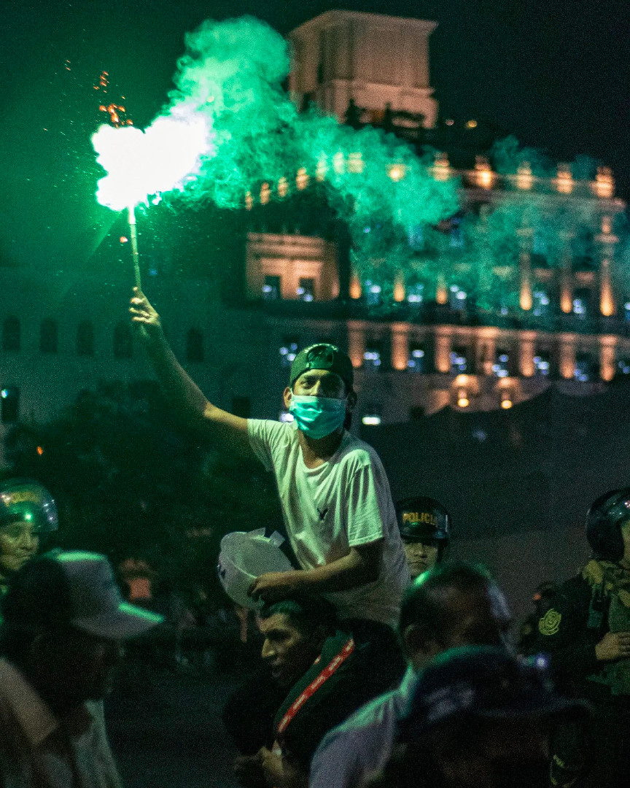
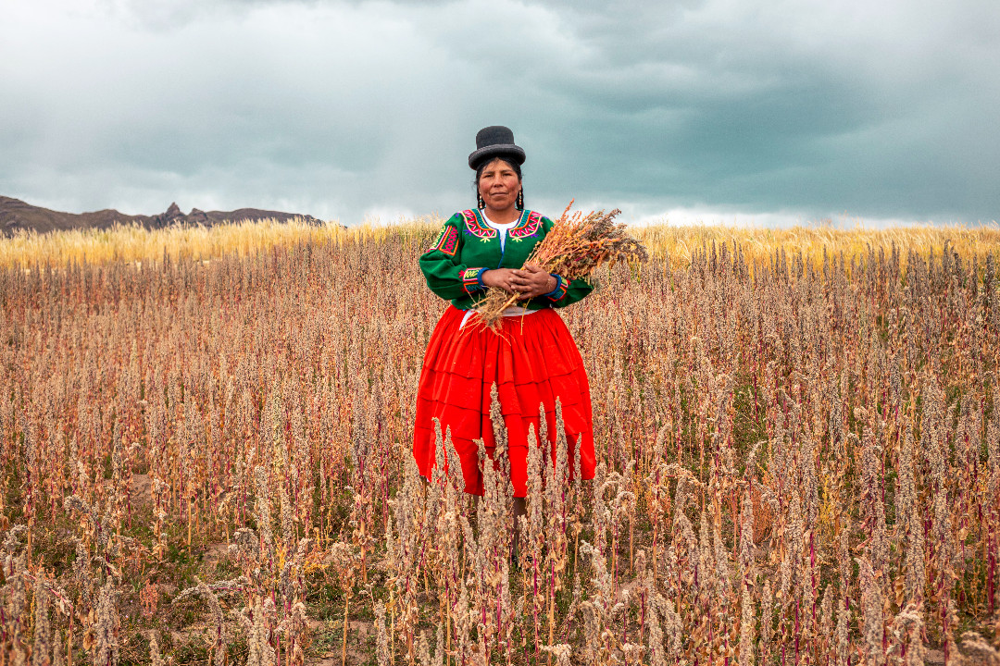
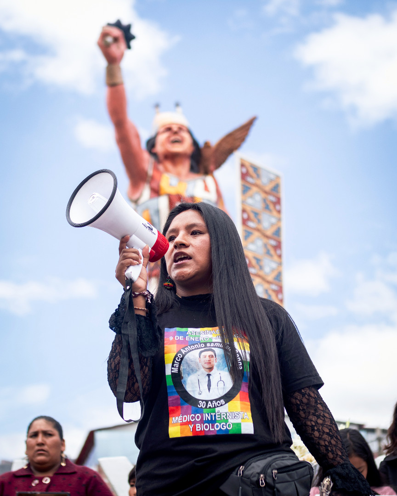

En diciembre de 2022, fundé Fotosdelucha, una iniciativa autogestionada nacida en las calles para registrar y difundir el proceso popular peruano desde el punto de vista de quienes se movilizan.
A la fecha cuenta con más de 500 días de registro en al menos 16 provincias del país, y se sostiene con el apoyo de personas que se identifican con el proyecto y gracias a los cuales se han realizado cerca de 20 viajes principalmente hacia el sur peruano para rescatar la memoria de nuestro proceso, complementándose así con el registro hecho en Lima.
Parte del archivo se ha publicado como un fotolibro y una exhibición fotográfica itinerante que sirven como herramientas de sensibilización, difusión y cambio.




